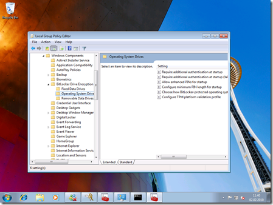
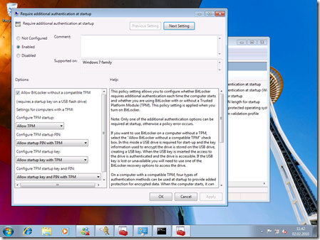
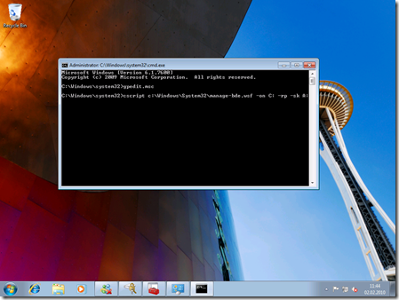

Today I am ill and lying in the bed with a medium temperature… but honestly, I can’t lie in bed the whole day doing nothing, even when being ill… so I tried something…
First of all, I haven’t invented this article, I just modified it to match a Windows 7 installation running in a Hyper-V R2 environment. The original information is coming from here, here and here.
To use Bitlocker in a Windows 7-Guest on a Hyper-V environment follow these steps:
- Create a new virtual floppy disk.
- Create a new guest VM with the settings you need.
- Install Windows 7 Ultimate on that guest VM. Other than described in the previous articles here, usage of diskpart is not necessary. Just perform an ordinary install as you would do on a physical or any other VM where you don’t need to use Bitlocker.
- Now the trick comes – you need to update the group policy to allow Bitlocker running on a machine without a TPM-chip installed, as Hyper-V. For this purpose follow the steps below:
- Open a Command Prompt as Administrator
- Type gpedit.msc and hit ENTER to start the Group Policy Editor.
- Navigate to “Computer Configuration” - “Administrative Templates” - “Windows Components” - “Bitlocker Drive Encryption” - “Operating System Drives”
 - Double-Click “Require additional authentication at startup”
- In here, configure as shown below: Enable the policy and check the “Allow Bitlocker without compatible TPM” option:
 - Switch back to the command prompt and type the following command:
cscript c:\Windows\System32\manage-bde.wsf -on C: -rp -sk A:
 - Now closely look at the output of the command prompt window. It asks you to restart your machine for validating Bitlocker encryption. Make sure that your previously created and formatted virtual floppy disk remains attached in the VM-settings. Otherwise you can’t boot the machine as the key is stored on this virtual floppy.
- Reboot your machine.
- After the reboot, Bitlocker encryption will start automatically.
{kind=link}
{kind=link}
{kind=link}
Of course you might ask, why I tried this out!?
Well, it happens sometimes that when preparing a presentation or working on a tricky problem for a customer, it’s better doing this at home where I can work quietly and therefore much more productive than in our Microsoft office where every n minutes someone passes by and asks questions or starts a discussion.
At home I am working on my power workstations which are much faster and more powerful than any notebook. The problem - while working at home, I often need full access to the corporate network. This is possible, only, if you have a machine joined to our Microsoft domain and – since the release of Windows 7 – that has Bitlocker installed. And honestly, I don’t want to join my private machine into the corp.-network, so my idea was running a VM on my Hyper-V server at home, that is joined to the corp.-domain
I had a similar idea for another reason – as you know we’re in a team where we’re working a lot with pre-release and beta-software. As pre-release software is typically not performance-optimized and carries a lot of debug-symbols etc. with it, it’s performance requirements are typically higher. So it’s better running that stuff on a physical system. So what my thought is: I have a stable, released-software-only VM running on a Hyper-V in our office, as well, that is joined to the corporate network and that I can use while installing another demo-environment on my physical machine. And again, the virtual machine joined to corp-net must use Bitlocker per our policy. So, another case where Bitlocker in a VM makes sense.